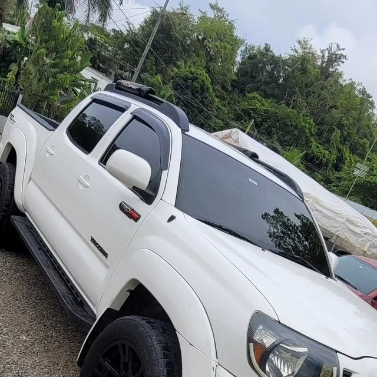
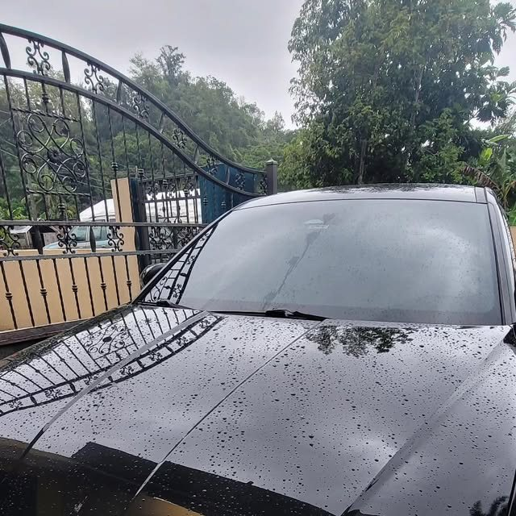
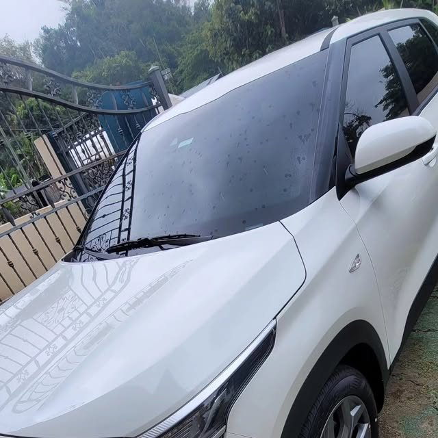
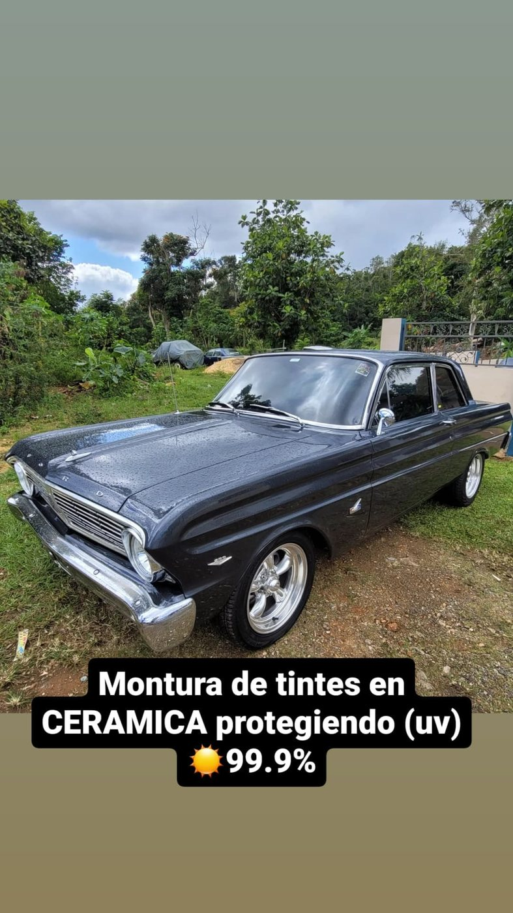
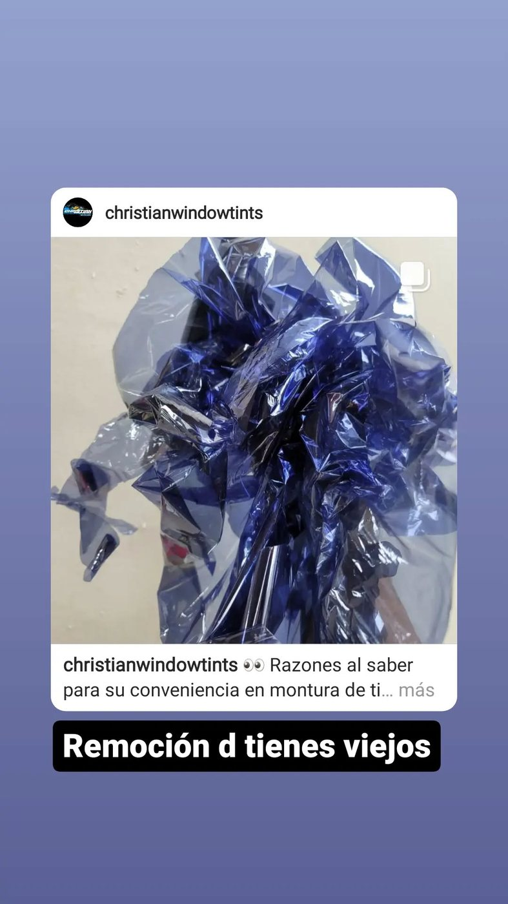
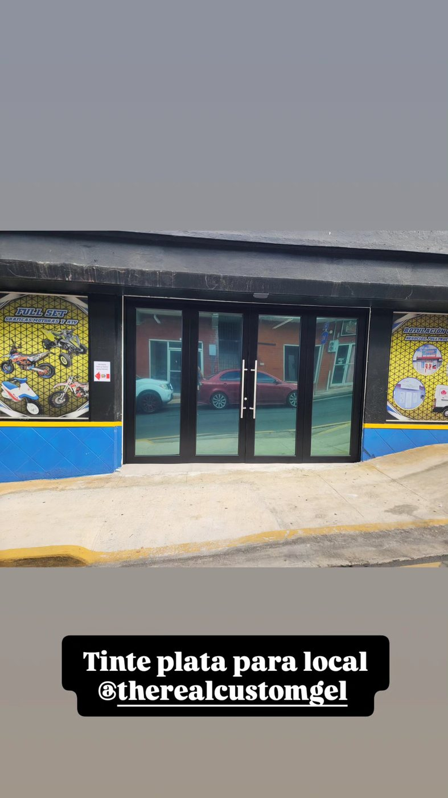
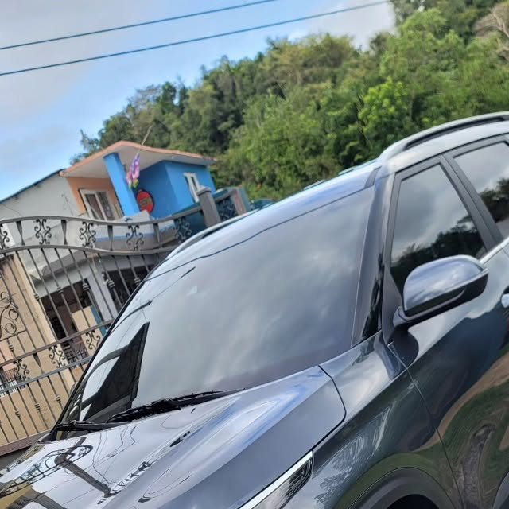

Tintes para autos
Instalación en laterales, posterior y windshield.
VLT 5–45%
Instalación de tintes industriales en autos, comercios, botes y residencias. Vamos hasta tu casa.
TRABAJOS REALES
Instalaciones reales de nuestro Instagram. Toca una foto para verla completa.




PROTOCOLO CWT

CATÁLOGO DE FILM
Instalación en laterales, posterior y windshield.
VLT 5–45%Rechazo de calor y protección UV 99.9%.
CERÁMICATrabajamos hasta la puerta de tu casa.
DOMICILIO
Tinte plata y privacidad para tu negocio.
COMERCIALQuitamos el film viejo antes del nuevo.
REMOCIÓN
Porcientos oscuros para máxima privacidad.
VLT 5–20%FICHA TÉCNICA
Christian Window Tints — Arecibo, Puerto Rico. Instalación de tintes industriales en autos, comercios, botes y residencias.
Servicio a domicilio: llegamos hasta la puerta de tu casa para que te ahorres la gasolina.
DUDAS FRECUENTES
Trabajamos desde 5% hasta 45%: 5%, 20%, 35%, 43% y 45%, según el área del vehículo y lo que busques — privacidad, estética o rechazo de calor.
Sí. Trabajamos hasta la puerta de tu casa para que te ahorres la gasolina y no pierdas tiempo.
Sí. Hacemos montura de tintes en cerámica con protección UV 99.9%.
Sí, hacemos remoción de tintes viejos antes de instalar el film nuevo.
Sí: autos, comercios, botes y residencias.
Por WhatsApp o llamada al 787-949-0586. Envíanos foto y modelo de tu vehículo para cotizarte al momento.
OFERTA MANUPRO · POR TIEMPO LIMITADO
Como esta página: fotos reales, botón de WhatsApp y posicionamiento en Google. Elige tu plan:
Regular $300
$99
Regular $600
$150
Regular $1,000
$200
CANALES DIRECTOS
Respuesta rápida. Envíanos foto y modelo.
Escríbenos →787-949-0586
Llamar ahora →@christianwindowtints · 1.1K seguidores
Ver perfil →Arecibo, Puerto Rico.
Servicio a domicilio en el área.